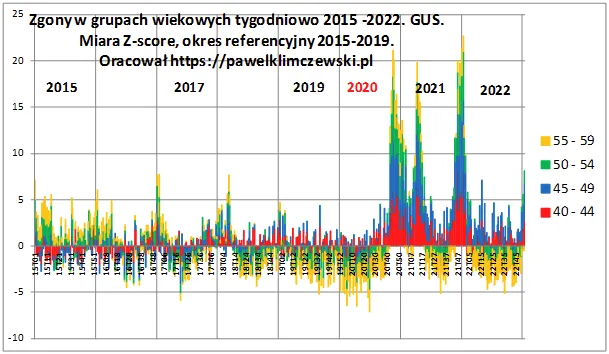
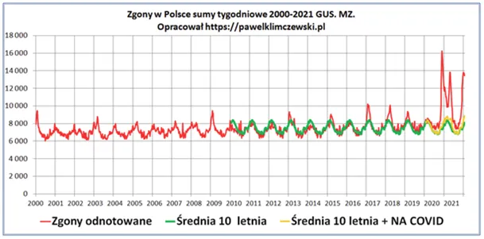

40-latkowie ze strachu przed covidem przestali umierać w 2020 r.!
202-01-28
Grafika: "Śmierć" Jacek Malczewski 1917
Mam sporo dokumentacji z medycznej od 2020 i jest w niej sporo fenomenów wartych odnotowania dla potomnych. Stworzyłem wtedy wykresy, które ilustrują zmiany w umieralności poszczególnych kohort wiekowych w stosunku do pięciolatki wstecz. Na wykresie posługujemy się miarą zscore, czyli odchyleniami standardowymi co niweluje wszelkie błędy wynikające np. ze zmiany proporcji ludzi w danym wieku itp. Odchylenie standardowe to tyle co odstępstwo od średniej.
Wykres jest tak skonstruowany, że kolorowe słupki "stoją" jeden na drugim dodając się lub odejmując pod zerem. Jeśli coś odbiega 4 jednostki to mieści się w normie, nasze słupki się sumują więc 16 jednostek to granica normy.

Od roku 2015 mamy kilka fal gryp, które przerzedziły słabszych 50-latków do tego stopnia, że od roku 2018 zgony w tej grupie stabilnie oscylują na minusie czyli poniżej średniej, ale w normie. Fenomen widzimy w marcu 2020, wszystkie cztery kohorty przechodzą na minus i umierają znacznie rzadziej niż zwykle. Czy mycie rąk jak widać wystarczyło, aby zmienić prawa biologiczne rządzące wielką populacją? Oczywiście nie! Ludzie zamknięci w domach nie byli wystawieni na niebezpieczeństwa wszelkich infekcji, ale też na wypadki komunikacyjne, itp.

Pik zgonów w październiku był jak doskonale wiemy skutkiem blokady służby zdrowia i co ilustruje ostatni wykres covid był w tym procesie nieistotny (jak CO2 w klimacie Ziemi).
Nie zapominajmy przed kolejnymi wyborami o "stosach covidowych trupów", których nigdzie nie było.
Paweł Klimczewski